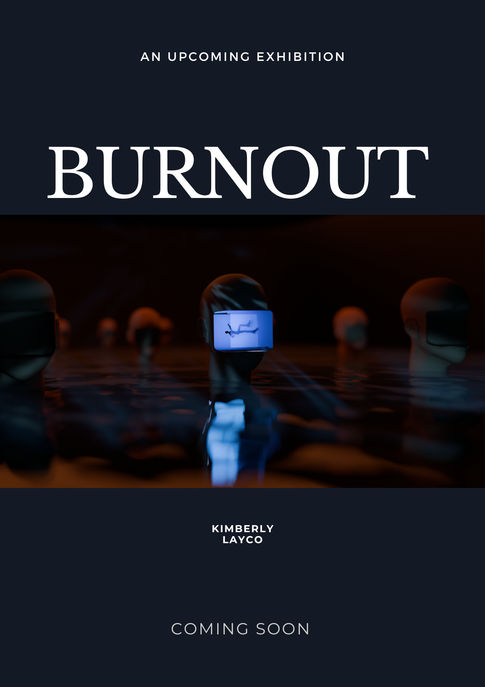

Profile
Seeking to graduate with a bachelor’s degree in Digital Media Arts at San Jose State University.
Digita Art Projects
Burnout, 2024
Exhibited at PRESS PLAY a digital media art BFA exhibition
“Burnout” is a series of short animations that loop over time and show various feelings of burnout in a surrealistic way. Burnout can leave people feeling dissociative and out of touch with reality so I wanted to bring those feelings into my pieces by creating an unreal environment with strange events happening. These five short animations will show some of the experiences that I went through when experiencing burnout but in a fantastical way. I will be switching between using Blender, Adobe Substance Painter, and Adobe Premiere Pro while creating my work so that I can seamlessly create an animation that can convey how burnout can feel. My animations will be drawing inspiration from some of my favorite artworks by Salvador Dali and Zdzslaw Beksinski. The hustle and grind culture has swept the nation and everyone around me worked themselves to the bone to get stuff done. Whether for work, personal projects, or school, everyone was always busy and filling their schedules. Eventually, these schedules wear people down and they are left with exhaustion or burnout. This happened to me a while ago for many years and I want people to be cautious when exerting themselves and to remember that stress can accumulate over time. This is why I am creating my piece called, “Burnout”.
Space Place, 2023
I was inspired by watching space and cyberpunk-themed movies and looking through some digitally rendered landscapes on Blender artist forums. I loved the mystery and high-contrast nightscapes other artists created and wanted to create one of my own. Down below are the noisy and de-noised versions of my "Space Place".

Window 2023
Flights that I take to a vacation destination are always the most relaxing and beautiful to be in. I love watching the city drift further away and the sky dims from night to day. To capture that magic I created a little airplane window of my own in Adobe Illustrator and Adobe After Effects.

wizard
When I went out to the theaters to watch fantasy and sci-fi movies, I was in awe of the special effects created by CGI artists, so I wanted to attempt making some special effects myself. I have always been fascinated by fantastical people and magic, whether it be in playing Dungeons and Dragons, video games, or movies, I find myself completely immersed in the world. While making this character, I tried envisioning what my spells look like and what they would do. In the Blender 3D art software, I learned more about particles and emitters and how to make things rotate and glow..


Work Experience
Orchard Supply Hardware, Milpitas
Cashier
August 2018 - October 2018
- Restocked inventory
- Assisted in cash handling
Jose Valdes Math-Institute, Stanford
Teacher's Assistant
July 2009 - August 2015
- Provided administrative assistance with program filing and paperwork
- Offered 1 to 1 tutoring for struggling students
Education
San Jose State University
Digital Media Arts, 2016-current
Work Exhibited at PRESS PLAY BFA exhibition in 2024